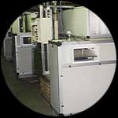

Engine Aspiration or Cooling Air
These units are designed to provide low volume close temperature controlled air to a
specific test area or engine aspiration inlet.
With the ever-changing climate pattern, the control of air temperature
within Test Cells is ever becoming more important. For comparing test results against a
standard, allowing repeatability of tests and testing against pre-set conditions the .
The general ventilation for the removal of high heat gains from diverse sources such as the engine casing, exhaust, dynamometer and ancillary services, normally necessitates a positive high rate cooling airflow across the test bed. As it is also desirable to maintain a constant or controlled engine air inlet temperature; this can be attained by reducing the through cell airflow, but this does become restrictive on the first parameter of maintaining a positive cooling airflow through the cell.
The recent hot summers have resulted in high daytime ambient temperatures of +30° C. For fresh air make up cooling into the Test Cell, a minimum 1-2° C temperature rise will automatically occur, so the engine air inlet temperatures rise to +32° C against which test results are often over the required maximum specified limits of say 28 oC.
Testing without control of inlet air temperatures is tedious as corrections or allowances have to be made. The results therefore do not provide common ‘referencing’ for test comparisons and repeatability; which is important on system development or improvement programmes.
Another aspect is to consider the global applications of vehicles today, where consideration should be given to looking at vehicles running in diverse locations from Oslo to Dakar, cold climate to hot desert conditions. The ability to simulate actual climatic temperatures allows for a new dimension in engine and vehicle testing.
To overcome these problems and allow for testing in more scientific controlled conditions, Envirosound have developed the EST, control air packaged unit.
It is an adaptable ventilation module, designed specifically to provide a controlled temperature low volume air supply, to serve the engine aspiration air inlet.
The package has the following features:-
- Pre- air filtration with disposable panel filters
- Main air filtration with EU5 bag filters, that can be cleaned prior to ultimate replacement.
- Cooling module coils for either chilled water or refrigerant DX control. Chilled water would need to be available on site for single applications. Where a multiple facility is required then a centralised CHW plant can be provided.
- Heating elements both initial frost coil for pre heating and main system element for temperature control. These are standard electric heating elements, controlled by thyristor. If hot water services are available on site or multiple units allow for a centralised HW plant then water coils can be fitted.
- A fixed blade centrifugal fan. This can be speed controlled although not with DX cooling.
- a fixed or variable volume fan unit, air filter, heating and cooling modules, control system and in-cell air delivery system. The air supply is not normally fixed to the engine
As there is a varied requirement to individual customers, the systems can be easily adapted during manufacture to increase cooling or heating capacities or adding special features such as airflow measurement devices.
For multiple test beds all requiring the same characteristics, a larger model is available with a ducted distribution system.
Specification:
EST 1 EST 2
Airflow variable or fixed m3/sec 1 2
Ambient temperature
Air delivery temperature 20-40° C ± 2° C
Electrical Power 440V/3/50 –
The EST temperature-controlled air management system takes either external ambient or factory air, filters and senses its temperature. This is compared to the required ‘set point’ in cell temperature and the air is either heated through an electric heater battery or cooled through refrigerated evaporative coils or treated through both. With fast-acting thyristor controls, the temperature control and stability will be better than 1° C at the unit outlet. The specified ± 2° C allows for system losses/cooling and heating delays and sudden changes to inlet air conditions.
Having carefully tempered our air, it is important to ensure its controlled delivery to the test cell. Fully insulated EVS ductwork is fitted with fire damper options at the cell penetrations. The ESA adjustable swinging drop arm is a specially developed feature for the EST system. It is airtight, very rigid and allows for air delivery to a varying envelope area for different engine testing. Also, when loading, rigging and unloading the cell, the ESA can be pivoted back to the wall out of the way.

